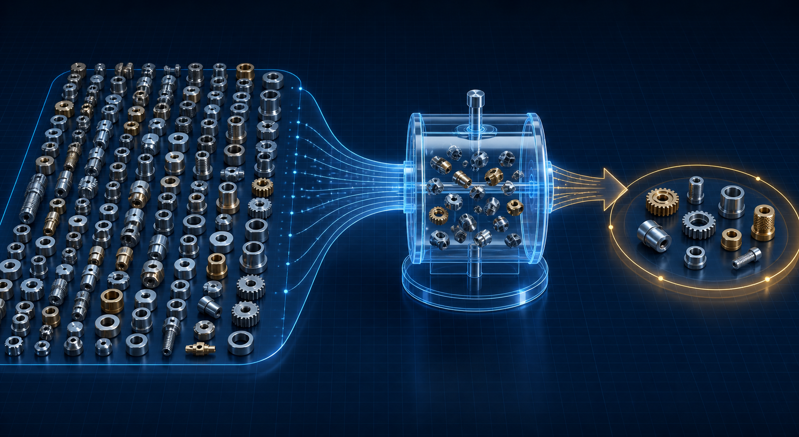
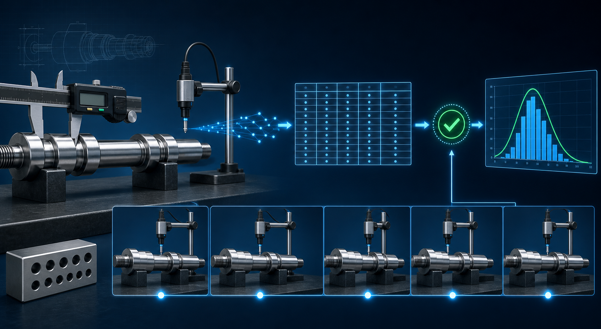

Aplicarás la probabilidad y la estadística para analizar datos, resolver problemas de ingeniería e interpretar información útil para la toma de decisiones.
Criterios de evaluación
Primer parcial
80% Examen 20% Trabajo en clase
Segundo parcial
80% Examen 20% Trabajo en clase
Tercer parcial
80% Examen 20% Trabajo en clase
La evaluación diagnóstica identifica conocimientos previos y no forma parte de los porcentajes de los parciales.
📝 Evaluación diagnóstica
10 preguntas sobre conocimientos matemáticos y estadísticos previos. Una sola oportunidad; si abandonas después de comenzar, se registrará 0.
Contenido del curso
1
Estadística descriptiva
Población, muestra, datos, tendencia central, dispersión, frecuencias, cuantiles y gráficos.
Eventos, espacio muestral, conteo, diagramas de árbol, probabilidad condicional y Bayes.
3
Distribuciones
Variables aleatorias y distribuciones discretas y continuas.
4
Estadística inferencial
Muestreo, estimadores, intervalos, pruebas y errores tipo I y II.
5
Regresión y correlación
Dispersión, regresión lineal, correlación, determinación y errores de medición.
Unidad 1 · Fundamentos para estudiar datos
1.1
CONCEPTOS FUNDAMENTALES
Población y muestra aleatoria
En ingeniería rara vez es posible medir todos los elementos de interés. La estadística permite estudiar una parte de ellos y utilizar la información obtenida para describir o inferir características del conjunto completo. Montgomery y Runger presentan este proceso como un puente entre los datos observados y la toma de decisiones de ingeniería; Gutiérrez Pulido destaca que la validez del análisis depende de que los datos representen realmente el proceso.
PoblaciónConjunto completo de unidades sobre las que se desea obtener información. Puede ser finita —por ejemplo, 2 000 engranes de un lote— o conceptual/infinita, como todas las mediciones futuras producidas por un proceso estable.
MuestraSubconjunto de unidades u observaciones extraído de la población. Su tamaño se representa por n; el tamaño de una población finita suele representarse por N.
ParámetroMedida numérica que describe a la población, como la media μ, la desviación estándar σ o una proporción p. Normalmente es desconocida.
EstadísticoMedida calculada con la muestra, como la media x̄, la desviación estándar s o la proporción p̂. Se utiliza para estimar el parámetro.
Población → selección aleatoria → muestra → estadístico → inferencia sobre el parámetro

La aleatoriedad pertenece al método de selección. Una muestra no se vuelve aleatoria solo por contener piezas variadas.
¿Qué significa muestra aleatoria?
En un muestreo aleatorio simple, cada muestra posible del mismo tamaño tiene la misma oportunidad de ser seleccionada. Esto reduce el sesgo introducido por quien recolecta los datos y permite utilizar modelos de probabilidad para cuantificar la incertidumbre. Sin embargo, la aleatoriedad no garantiza que una muestra particular reproduzca perfectamente a la población; garantiza que el procedimiento no favorezca sistemáticamente ciertos resultados.
Ejemplo aplicado
Inspección dimensional de ejes. Una línea produjo 1 200 ejes durante un turno. La población son los 1 200 ejes; el diámetro es la variable; μ es el diámetro promedio verdadero del lote. Si se numeran las piezas y un generador selecciona 40 números sin reemplazo, esas 40 piezas forman una muestra aleatoria. Su media x̄ estima μ, pero no es idéntica a él.
Tipos frecuentes de selección
Aleatoria simple: se seleccionan unidades mediante números aleatorios.
Sistemática: se elige un inicio aleatorio y después cada k-ésima unidad.
Estratificada: se divide la población en grupos relevantes —turnos, máquinas o proveedores— y se toma una muestra de cada grupo.
Por conglomerados: se seleccionan grupos completos cuando las unidades están organizadas naturalmente.
Error común: medir únicamente las piezas que están más cerca, las que pasan al inicio del turno o las que parecen defectuosas produce una muestra por conveniencia y puede distorsionar las conclusiones.
Actividad breve
Una planta tiene tres tornos que producen 50%, 30% y 20% de sus piezas. Diseña una muestra de 30 piezas que represente a los tres tornos. Explica por qué una muestra estratificada sería preferible a tomar las primeras 30 piezas disponibles.
1.2
PLANEACIÓN Y MEDICIÓN
Obtención de datos estadísticos
Un análisis estadístico no puede corregir por completo datos mal definidos o recolectados con sesgo. Por ello, la obtención de datos comienza antes de medir: primero se formula la pregunta, después se define qué observar, cómo seleccionarlo, con qué instrumento medirlo y cómo verificar la calidad del registro.
Fuentes de datos
Datos observacionalesSe registra el proceso tal como ocurre, sin asignar deliberadamente tratamientos. Son comunes en producción, mantenimiento y registros históricos.
Datos experimentalesSe modifican de manera planeada uno o más factores para estudiar su efecto sobre una respuesta. Requieren aleatorización, repetición y control.
Fuentes primariasMediciones obtenidas específicamente para el estudio: sensores, inspecciones, encuestas o pruebas.
Fuentes secundariasRegistros existentes: bases de producción, bitácoras, reportes, sistemas ERP o documentos institucionales.

Un dato útil conserva la relación entre la pieza medida, el instrumento, las condiciones, el momento de medición y el registro final.
Plan de recolección
Definir el objetivo. Convertir el problema en una pregunta concreta: ¿qué se necesita decidir o comparar?
Delimitar población y unidad de análisis. Precisar lugar, periodo, proceso y elemento que genera cada observación.
Definir variables operacionalmente. Indicar propiedad, unidad, método, resolución y criterio de aceptación.
Diseñar el muestreo. Establecer cuándo, dónde, cuántas unidades y mediante qué mecanismo serán seleccionadas.
Verificar el sistema de medición. Comprobar calibración, resolución, repetibilidad, reproducibilidad y estabilidad.
Diseñar el formato de registro. Incluir identificador, fecha, turno, máquina, operador, instrumento, valor y observaciones.
Realizar una prueba piloto. Detectar ambigüedades, datos imposibles, campos faltantes y dificultades operativas.
Recolectar y validar. Revisar rangos, unidades, duplicados, valores faltantes y trazabilidad sin alterar silenciosamente los datos originales.
Clasificación básica de variables
CualitativasDescriben categorías. Pueden ser nominales —tipo de falla— u ordinales —severidad baja, media o alta—.
CuantitativasExpresan cantidades. Son discretas cuando cuentan eventos y continuas cuando miden magnitudes como diámetro, presión o temperatura.
Ejemplo de formato mínimo
Objetivo: evaluar la variación del diámetro de un eje. Variable: diámetro exterior en mm, resolución de 0.01 mm. Población: ejes producidos por tres tornos durante el turno matutino. Muestra: cinco piezas por torno cada hora, con inicio aleatorio. Registro: pieza, torno, hora, operador, calibrador, medición y observaciones.
Principio de calidad: conservar el dato original. Si se corrige un registro, debe mantenerse evidencia de qué cambió, quién lo modificó y por qué. Eliminar valores atípicos solo porque “se ven extraños” puede ocultar una falla real del proceso.
Actividad de aplicación
Diseña una hoja de recolección para estudiar el tiempo de llenado de un cilindro neumático. Incluye objetivo, población, unidad de análisis, variable, unidad, instrumento, frecuencia, tamaño de muestra y cinco controles para validar los datos.
Fuentes de consulta
Gutiérrez Pulido, H. y De la Vara Salazar, R. Control estadístico de la calidad y Seis Sigma. McGraw-Hill.
Montgomery, D. C. y Runger, G. C. Applied Statistics and Probability for Engineers, 7.ª ed., Wiley, 2018.